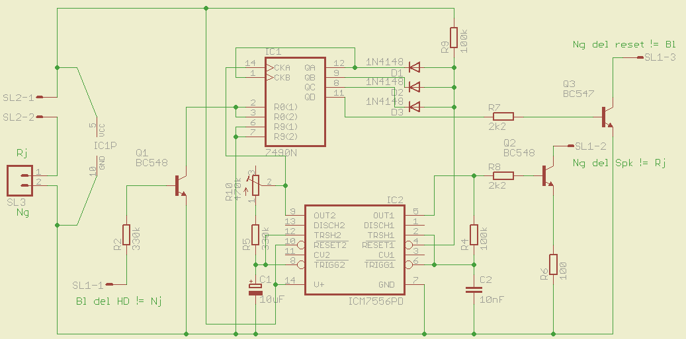

Hay multitud de circuitos de este estilo en Internet. Desde el más simple missing pulse detector a los más profesionales que tienen interfaz PCI pasando por los basados en el 74123 o los más modernos usando chips dedicados. Pero todos se basan en lo mismo: esperamos recibir una señal cada cierto tiempo, si no se recibe en un intervalo dado, asumimos que el PC está muerto y se reinicia.
El que os presento hoy está compuesto de un 7490, que es un contador decádico, y un ICM7556, que no es más que un LM556 de toda la vida con consumo y otras cositas mejoradas. Uso estos porque eran los que tenía por casa cuando diseñé el circuito, pero con cualquier otro contador se podría hacer también.
Antes de nada tenemos que buscar una señal que se reciba periódicamente mientras el PC responda. Una opción sería mandar por el puerto serie una cadena, y que el PC nos respondiera otra, dándolo por muerto si no lo hace en un determinado tiempo. Pero tiene algunos inconvenientes:
- Para empezar necesitaríamos un puerto serie, que en los PCs modernos empiezan a desaparecer lentamente en favor del mucho menos amistoso USB (comunicarse con el puerto serie es muy sencillo, comunicarse usando el USB es una odisea de narices, menos mal que podemos hacer un conversor sencillo para ocasiones concretas).
- Por un lado necesitaríamos un programa especial corriendo en segundo plano, que estuviera escuchando en ese puerto y respondiera adecuadamente. Este programa debe programarse para el sistema operativo que se esté usando, debe instalarse y hasta que no empezara a funcionar el dispositivo podría creer que el PC está colgado.
- Por otro lado, ocupamos un puerto libre, que podemos necesitar o no.
- Y por último para construir este circuito sería necesario un microcontrolador que también podría colgarse. Por eso lo ideal para hacer de watchdog es un circuito cuanto más simple mejor.
Descripción del circuito

{kind=link}
Empezaremos describiendo el circuito por la parte izquierda de IC2. Ambos 555 están montados como oscilador astable con un duty del 50% siguiendo el esquema en la figura 1.a de la página 6 del datasheet. Según la fórmula que acompaña a la figura, el periodo de esta parte izquiera puede variar entre 4.5 y 11 segundos aproximadamente según la posición de R10. Esta nos servirá como frecuencia de reloj que alimenta a IC1.
El 7490 contiene dos divisores, un divisor por 2 y un divisor por 5. La señal de reloj que genera IC2 se inyecta al primero de los divisores. Mientras la salida de este se conecta a la entrada de reloj del segundo. Así conseguimos un divisor por 10.
Cuando al cabo de 10 periodos la salida QD de IC1 está activa el transistor Q3 conduce y simula una pulsación del botón Reset, reiniciando el PC. El tiempo que esto lleva depende de la posición de R10. Q3 va conectado a la masa del botón de reset. La indicación Ng del reset =! Bl significa que este pulsador tiene los cables de color blanco y negro, y se conecta a este último.
Para que el circuito no reinicie el PC es necesario reinicar el contador antes de que ese tiempo transcurra, esto se hace a través de Q1 que va conectado a la señal que hemos elegido, en este caso el led del disco duro.
Alarma
Los diodos D1, D2 y D3, junto con R9 forman una puerta AND que va conectada al terminal reset del segundo 555 (parte derecha de IC2). Este está configurado como astable con una frecuencia alrededor de 700Hz. Nos servirá de alarma.
Cuando todas las salidas de IC1 están a nivel alto -lo que significa que al siguiente pulso se producirá el reinicio automático- a la patilla 4 de IC2 llega una tensión positiva que lo saca del reset. Empieza a oscilar y a través de Q2 el tono de alarma alcanza el altavoz interno.
Esta alarma sonará durante todo el periodo previo al reinicio.
Notas
- Los colores de los cables sólo son orientativos. (Bl = Blanco, Nj = Naranja, Rj = Rojo, Ng = Negro).
- Los terminales nombrados SL2 son para conectar un interruptor para activar o desactivar el circuito a voluntad.
- SL3 es el conector de alimentación. Este circuito se conecta a cualquier toma de tensión de 5 voltios.
- La numeración de los componentes es un tanto caótica.